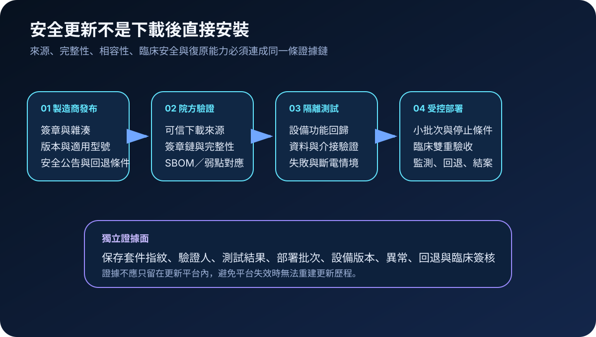
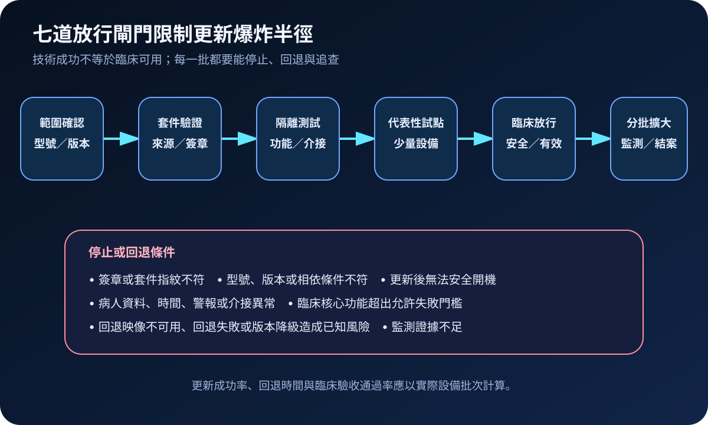
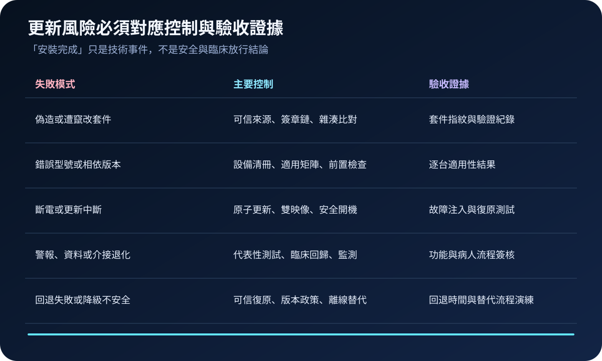

醫療資安國際觀察 · 2026-11-13
醫療設備安全更新如何避免更新後失效：從套件真偽到臨床回退
作者：Dr. William｜醫療資訊與資安治理實務工作者
醫療設備更新同時改變軟體、韌體、警報、資料與介接行為。安全治理不能只確認安裝完成，還要證明套件可信、設備適用、臨床功能未退化，且失敗時可安全停止或恢復。
名詞解釋：簽章、原子更新與可信回退
數位簽章用於驗證套件來源與完整性；原子更新讓更新在完整成功後才切換狀態，降低半套安裝；雙映像保留可開機的替代版本；可信回退則要求回復映像、金鑰、版本政策與復原流程都經驗證，不能把降回任意舊版視為安全。
國際現況與適用邊界
FDA 於 2026 年 2 月發布醫療設備上市前資安最終指引，將安全更新、修補能力、驗證、部署與生命週期計畫納入製造商資安文件。NIST SP 800-193 以保護、偵測與復原說明平台韌體遭未授權變更或破壞時的韌性設計；NIST SP 800-218 則要求軟體交付流程保護成品完整性、來源與發布證據。前述內容分屬美國產品監管與聯邦技術方法，不是台灣醫療機構的直接法定義務。
台灣適用原則：可將國際方法轉成採購條件、更新驗收、維護契約、分批部署、臨床回歸與例外接受流程；實際責任仍須依台灣醫療器材、資安、個資、醫療品質規範及院內程序確認。
規劃：先定義更新可放行與必須停止的條件
更新清冊應連結設備型號、序號、現行版本、臨床用途、網路位置、依賴系統、供應商公告、套件指紋、維護窗口、替代流程與責任單位。驗收指標可包含簽章驗證率、適用性確認率、試點異常率、更新成功率、回退成功率、臨床回歸通過率及未結例外數。
實作：六階段縮小更新爆炸半徑
- 確認範圍：逐台核對型號、版本、硬體修訂、相依套件與臨床用途。
- 驗證套件：由核准來源取得更新，驗證簽章鏈、雜湊、版本與公告適用範圍。
- 隔離測試：驗證安全開機、警報、資料保存、時間、網路、身分、介接與斷電復原。
- 代表性試點：先選少量且可替代的設備，設定技術與臨床停止條件。
- 分批放行：每批部署後監測異常，完成臨床與醫工雙重確認再擴大。
- 結案重驗：保存逐台結果、失敗原因、回退、例外與最終版本基線。

風險：回退本身也可能重新引入弱點
常見失敗包括從非官方位置下載、簽章失效仍手動繞過、套件對錯型號、更新中斷造成無法開機、警報或介接悄然退化，以及回退到含已知弱點的舊版。回退計畫必須同時管理可用映像、允許版本、金鑰信任、資料相容性、離線替代與重新更新期限。

可執行清單
- 每台設備是否能連到型號、序號、現行版本、臨床用途與責任單位？
- 套件是否由核准來源取得並完成簽章鏈、雜湊與適用性驗證？
- 測試是否涵蓋警報、病人資料、時間、介接、網路、斷電與安全開機？
- 是否先做代表性試點，並設定可量測的停止與回退條件？
- 每一批是否完成技術監測、醫工確認與臨床流程驗收？
- 回退映像、允許版本、資料相容性與離線替代是否實際演練？
- 失敗、例外與暫緩更新是否有責任人、期限、補償控制及重評條件？
來源
- FDA｜Cybersecurity in Medical Devices: Quality System Considerations and Content of Premarket Submissions（發布：2026-02-03；查閱：2026-11-13）
- NIST｜SP 800-193: Platform Firmware Resiliency Guidelines（發布：2018-05；查閱：2026-11-13）
- NIST｜SP 800-218: Secure Software Development Framework Version 1.1（發布：2022-02；查閱：2026-11-13）
內容說明
本文依健康台灣深耕計畫相關治理內容整理，並參考 FDA 與 NIST 一手資料，說明醫療設備更新套件驗證、隔離測試、分批放行、臨床回歸及可信回退；不把美國上市前指引或聯邦技術方法視為台灣醫療機構的法定義務，也不取代主管機關規範、製造商程序、醫療器材評估、臨床驗證或法律意見。